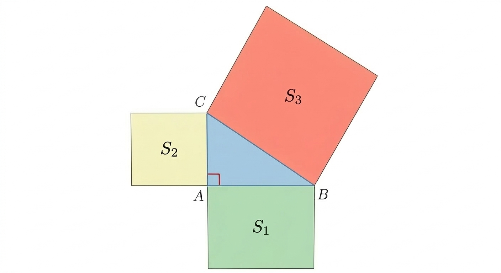

In a right-angled triangle ABC, squares with areas S1, S2, and S3 are constructed on the sides AB, AC, and BC, respectively. Given that S2 = 5, S3 = 16, and ∠BAC = 90°, what is S1?

In a right-angled triangle ABC, squares with areas S1, S2, and S3 are constructed on the sides AB, AC, and BC, respectively. Given that S2 = 5, S3 = 16, and ∠BAC = 90°, what is S1?

<think>
Okay, let's see. The problem is about a right-angled triangle ABC with a right angle at A, since ∠BAC = 90°. Squares are constructed on each side: S1 on AB, S2 on AC, and S3 on BC. We need to find S1 given that S2 = 5 and S3 = 16.
First, I remember that in a right-angled triangle, the Pythagorean theorem applies. The square of the hypotenuse (the side opposite the right angle) is equal to the sum of the squares of the other two sides. Wait, but here we have squares built on the sides. So S1 is the area of the square on AB, S2 on AC, and S3 on BC.
Let me confirm the labels. Triangle ABC is right-angled at A, so sides AB and AC are the legs, and BC is the hypotenuse. Therefore, BC² = AB² + AC². But S1 is the area of the square on AB, which is AB². Similarly, S2 is AC², and S3 is BC².
Given S2 = 5, which is AC² = 5. S3 = 16, which is BC² = 16. Then by Pythagoras, S1 (AB²) should be S3 - S2. Let me check: BC² = AB² + AC² → 16 = S1 + 5 → S1 = 16 - 5 = 11.
Wait, but let me make sure I didn't mix up the sides. Since the right angle is at A, then AB and AC are the legs, BC is the hypotenuse. Yes, so the squares on the legs would be S1 and S2, and the square on the hypotenuse is S3. So according to Pythagoras, S1 + S2 = S3. Therefore, S1 = S3 - S2 = 16 - 5 = 11.
Looking back at the diagram: S1 is the green square on AB, S2 on AC (yellow), S3 on BC (red). The triangle ABC has right angle at A, so yes, AB and AC are legs, BC hypotenuse. So S1 = S3 - S2 = 11. That seems straightforward.
</think>
<answer>
The problem involves a right-angled triangle $ABC$ with $\angle BAC = 90^\circ$, and squares constructed on its sides $AB$, $AC$, and $BC$, labeled $S_1$, $S_2$, and $S_3$ respectively. By the Pythagorean theorem, for a right-angled triangle, the square of the hypotenuse equals the sum of the squares of the other two sides. Here, $BC$ is the hypotenuse (since $\angle A$ is the right angle), so:
$$
BC^2 = AB^2 + AC^2
$$
This translates to:
$$
S_3 = S_1 + S_2
$$
Given $S_2 = 5$ and $S_3 = 16$, solve for $S_1$:
$$
S_1 = S_3 - S_2 = 16 - 5 = 11
$$
\boxed{11}
</answer>